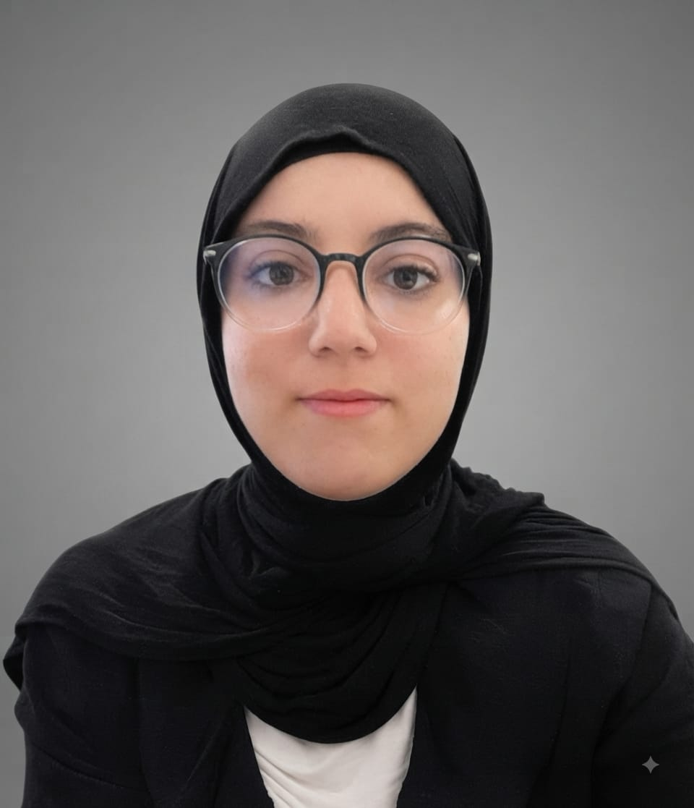

About
me
I'm Fatima Zahra Rabouli, a Master's graduate in Smart Industry with a passion for automation, robotics, and digital innovation. I design and develop intelligent systems integrating modeling, sensors, and embedded communication. Curious, rigorous, and creative, I'm driven to contribute to innovative projects in connected industry and intelligent robotics.
← Back to home